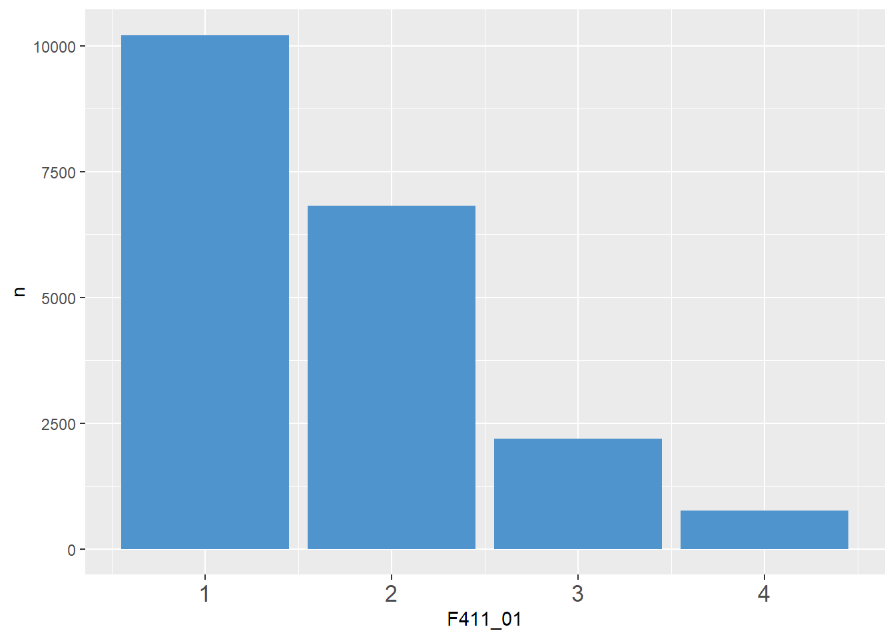

library(tidyverse)
etb18_kap5 <- haven::read_dta("./data/BIBBBAuA_2018_suf1.0.dta",
col_select = c("intnr", "S1", "m1202", "Bula","F411_01","az","zpalter")) %>%
filter(F411_01<9, zpalter < 100)5 Data Wrangling I: Labels
5.1 Labels aus anderen Programmen in R
In vielen Programmen wie Stata oder SPSS werden die labels häufig durch die Operationen “mitgeschleift” und dann ausgegeben. Das ist in R nicht der Fall. Stattdesssen können wir mit Hilfe des Variablentyps factor Labels vergeben. Das Vorgehen mag für alle, die schon lange mit Stata oder SPSS gearbeitet haben, etwas ungewöhnlich sein - ist aber in der Praxis sehr hilfreich, wenn man sich den entsprechenden Workflow angewöhnt hat.
Wenn wir bspw. die Ansicht mit View() öffnen oder eine Auszählung mit count() erstellen, werden uns labels angezeigt:
View(etb18_kap5)
etb18_kap5 %>% count(S1)Diese sind als attributes() Variablen zugeordnet:
attributes(etb18_kap5$S1)$label
[1] "Geschlecht"
$format.stata
[1] "%8.0g"
$labels
männlich weiblich
1 2
$class
[1] "haven_labelled" "vctrs_vctr" "double" …leider machen die attributes() immer wieder Probleme:
library(ggplot2)
ggplot(data = etb18_kap5, aes(x = zpalter, y = az, color = S1 )) +
geom_point()Don't know how to automatically pick scale for object of type
<haven_labelled/vctrs_vctr/double>. Defaulting to continuous.
Don't know how to automatically pick scale for object of type
<haven_labelled/vctrs_vctr/double>. Defaulting to continuous.Error in UseMethod("rescale"): nicht anwendbare Methode für 'rescale' auf Objekt der Klasse "c('haven_labelled', 'vctrs_vctr', 'double')" angewendetIn den beiden vorherigen Kapiteln haben wir schon gesehen, dass Labels in R immer etwas extra Aufwand bedeuten. In Grafiken mussten wir mit breaks = c(1,2), labels = c("Männer", "Frauen") die Labels extra erstellen.
Wie können wir die Labels attributes() verwenden und so Tipparbeit sparen?
{haven} enthält sich die Funktion as_factor1, mit der wir aus Labels direkt eine factor-Variable erstellen können:
etb18_kap5$S1_fct <- as_factor(etb18_kap5$S1)
# ansehen:
etb18_kap5 %>% select(contains("S1")) %>% head()# A tibble: 6 × 2
S1 S1_fct
<dbl+lbl> <fct>
1 1 [männlich] männlich
2 2 [weiblich] weiblich
3 1 [männlich] männlich
4 2 [weiblich] weiblich
5 2 [weiblich] weiblich
6 1 [männlich] männlichggplot(data = etb18_kap5, aes(x = zpalter, y = az, color = S1_fct )) +
geom_point()Don't know how to automatically pick scale for object of type
<haven_labelled/vctrs_vctr/double>. Defaulting to continuous.5.2 factor selbst erstellen oder bearbeiten
Für m1202 sind die Labels aber etwas lang:
tab1 <- etb18_kap5 %>% count(m1202) %>% mutate(m1202_fct = as_factor(m1202))
tab1# A tibble: 5 × 3
m1202 n m1202_fct
<dbl+lbl> <int> <fct>
1 -1 [keine Angabe] 44 keine Ang…
2 1 [Ohne Berufsabschluss] 1071 Ohne Beru…
3 2 [duale o. schulische Berufsausbildung/einf.,mittl. Beamte] 9209 duale o. …
4 3 [Aufstiegsfortbildung (Meister, Techniker, kfm. AFB u.ä.)] 1711 Aufstiegs…
5 4 [Fachhochschule, Universität/ geh., höhere Beamte] 7792 Fachhochs…Alternativ können wir auch mit factor() und levels und labels selber labeln. Die labels werden dann der Reihenfolge nach den Zahlen aus levels zugewiesen. Außerdem wird aus allen nicht angegebenen levels automatisch NA:
tab1$m1202_fct2 <- factor(tab1$m1202,
levels = c(1,2,3,4),
labels = c("ohne Abs.", "dual/schul.", "Aufstiegsfortb.", "FH/Uni"))
tab1# A tibble: 5 × 4
m1202 n m1202…¹ m1202…²
<dbl+lbl> <int> <fct> <fct>
1 -1 [keine Angabe] 44 keine … <NA>
2 1 [Ohne Berufsabschluss] 1071 Ohne B… ohne A…
3 2 [duale o. schulische Berufsausbildung/einf.,mittl. B… 9209 duale … dual/s…
4 3 [Aufstiegsfortbildung (Meister, Techniker, kfm. AFB … 1711 Aufsti… Aufsti…
5 4 [Fachhochschule, Universität/ geh., höhere Beamte] 7792 Fachho… FH/Uni
# … with abbreviated variable names ¹m1202_fct, ²m1202_fct2Oder wir nutzen die Funktionen aus {forcats} zur recodierung eines factors. {forcats} ist Teil des {tidyverse}. Mit fct_recode() können wir die levels verändern:
levels(tab1$m1202_fct)[3][1] "duale o. schulische Berufsausbildung/einf.,mittl. Beamte"tab1$m1202_fct3 <- fct_recode(tab1$m1202_fct,
`duale / schulische Ausb.` = "duale o. schulische Berufsausbildung/einf.,mittl. Beamte", # bei Leerzeichen `` um die Wörter
)tab1 %>% select(m1202_fct,m1202_fct2,m1202_fct3)m1202_fct | m1202_fct2 | m1202_fct3 |
|---|---|---|
keine Angabe | keine Angabe | |
Ohne Berufsabschluss | ohne Abs. | Ohne Berufsabschluss |
duale o. schulische Berufsausbildung/einf.,mittl. Beamte | dual/schul. | duale / schulische Ausb. |
Aufstiegsfortbildung (Meister, Techniker, kfm. AFB u.ä.) | Aufstiegsfortb. | Aufstiegsfortbildung (Meister, Techniker, kfm. AFB u.ä.) |
Fachhochschule, Universität/ geh., höhere Beamte | FH/Uni | Fachhochschule, Universität/ geh., höhere Beamte |
Weitere fct_....() Funktionen aus {forcats}, einen Überblick gibt das Cheatsheet.
5.3 Übung
etb18_ue5 <- haven::read_dta("./data/BIBBBAuA_2018_suf1.0.dta",
col_select = c("intnr", "S1", "m1202", "Bula","F411_01")) %>%
filter(F411_01<9)Bearbeiten Sie die labels dieses Diagramms:
F411_01: Wie häufig kommt es vor, dass Sie unter starkem Termin- oder Leistungsdruck arbeiten?
| value | label |
|---|---|
| 1 | häufig |
| 2 | manchmal |
| 3 | selten |
| 4 | nie |
Code
tab_ue5 <-
etb18_ue5 %>%
count(F411_01)
tab_ue5# A tibble: 4 × 2
F411_01 n
<dbl+lbl> <int>
1 1 [häufig] 10211
2 2 [manchmal] 6827
3 3 [selten] 2196
4 4 [nie] 769Code
tab_ue5 %>%
ggplot(data = ., aes(x = F411_01, y = n)) +
geom_col(fill = "steelblue3")
- Erstellen Sie dafür zunächst einen
data.framemit der Auszählung durchcount()und legen diese als Objekt ab. - Wie können Sie die labels aus den
attributes()mitas_factor()in eine VariableF411_01_fctübernehmen? - Erstellen Sie einen
factor()VariableF411_01_fct2mit den den gewünschten Beschriftungen mit Hilfe vonlabels =. (Sie können die Labels der VariableF411_01mitattributes(etb18_kap5$F411_01)$labelsnachsehen.) - Verwenden Sie die gelabelten Variablen für die Grafik.
Bonusübung: Was müssten wir ändern, um die Grafik nach Geschlecht (S1) zu erstellen?
5.4 Anhang
5.4.1 Labels löschen mit zap_... aus {haven}
Häufig führen die Label-attributes() zu Problemen in der weiteren Verarbeitung. Mit haven::zap_labels() können wir die Value labels aus einem Datensatz löschen mit haven::zap_label() können wir die Variable labels entfernen.
etb18_kap5# A tibble: 19,827 × 8
intnr az zpalter Bula S1 F411_01 m1202 S1_fct
<dbl> <dbl> <dbl+lbl> <dbl+lbl> <dbl+lbl> <dbl+lbl> <dbl+lbl> <fct>
1 260 80 41 11 [Berlin] 1 [männlich] 1 [häufig] 4 [Fachho… männl…
2 361 30 51 11 [Berlin] 2 [weiblich] 2 [manchmal] 2 [duale … weibl…
3 491 40 49 11 [Berlin] 1 [männlich] 2 [manchmal] 4 [Fachho… männl…
4 690 40 63 11 [Berlin] 2 [weiblich] 2 [manchmal] 4 [Fachho… weibl…
5 919 39 41 11 [Berlin] 2 [weiblich] 2 [manchmal] 2 [duale … weibl…
6 1041 40 57 11 [Berlin] 1 [männlich] 1 [häufig] 2 [duale … männl…
7 1077 12 62 11 [Berlin] 1 [männlich] 2 [manchmal] 4 [Fachho… männl…
8 1306 30 59 11 [Berlin] 2 [weiblich] 3 [selten] 2 [duale … weibl…
9 1357 42 32 11 [Berlin] 2 [weiblich] 1 [häufig] 4 [Fachho… weibl…
10 1488 48 62 11 [Berlin] 2 [weiblich] 1 [häufig] 4 [Fachho… weibl…
# … with 19,817 more rowsetb18_kap5 %>%
haven::zap_labels() # value labels raus# A tibble: 19,827 × 8
intnr az zpalter Bula S1 F411_01 m1202 S1_fct
<dbl> <dbl> <dbl> <dbl> <dbl> <dbl> <dbl> <fct>
1 260 80 41 11 1 1 4 männlich
2 361 30 51 11 2 2 2 weiblich
3 491 40 49 11 1 2 4 männlich
4 690 40 63 11 2 2 4 weiblich
5 919 39 41 11 2 2 2 weiblich
6 1041 40 57 11 1 1 2 männlich
7 1077 12 62 11 1 2 4 männlich
8 1306 30 59 11 2 3 2 weiblich
9 1357 42 32 11 2 1 4 weiblich
10 1488 48 62 11 2 1 4 weiblich
# … with 19,817 more rows5.4.2 Labels selbst erstellen und ranspielen
Ein alternativer Weg geht über einen kleinen Label-data.frame und left_join() (mehr zu left_join() später.)
tab2 <- etb18_kap5 %>% count(m1202)lab_df <- data.frame(m1202=1:4)
lab_df m1202
1 1
2 2
3 3
4 4lab_df$m1202_lab <- factor(lab_df$m1202,levels = 1:4,
labels = c("ohne Abs.", "dual/schul.", "Aufstiegsfortb.", "FH/Uni"))
lab_df m1202 m1202_lab
1 1 ohne Abs.
2 2 dual/schul.
3 3 Aufstiegsfortb.
4 4 FH/Unitab2 %>%
left_join(lab_df,by = "m1202")# A tibble: 5 × 3
m1202 n m1202_lab
<dbl+lbl> <int> <fct>
1 -1 [keine Angabe] 44 <NA>
2 1 [Ohne Berufsabschluss] 1071 ohne Abs.
3 2 [duale o. schulische Berufsausbildung/einf.,mittl. Beamte] 9209 dual/schu…
4 3 [Aufstiegsfortbildung (Meister, Techniker, kfm. AFB u.ä.)] 1711 Aufstiegs…
5 4 [Fachhochschule, Universität/ geh., höhere Beamte] 7792 FH/Uni In ggplot() geben wir dann m1202_lab an, um diese auf die x-Achse zu setzen:
tab2 %>%
left_join(lab_df,by = "m1202") %>%
ggplot(data = ., aes(x = m1202_lab, y = n)) +
geom_col(position=position_dodge(), fill = "turquoise3")
5.4.3 Labels in R erstellen und nach bspw. Stata exportieren
Wenn wir aber beispielsweise einen Datensatz für Stata labeln wollen, hilft uns wieder {labelled}:
library(labelled)etb18_kap5$S1_num2 <- as.numeric(etb18_kap5$S1)
attributes(etb18_kap5$S1_num2)NULLval_labels(etb18_kap5$S1_num2) <- c("Mann"=1,"Frau"=2)
attributes(etb18_kap5$S1_num2)$labels
Mann Frau
1 2
$class
[1] "haven_labelled" "vctrs_vctr" "double" etb18_kap5 %>% count(S1_num2)# A tibble: 2 × 2
S1_num2 n
<dbl+lbl> <int>
1 1 [Mann] 9984
2 2 [Frau] 9843etb18_kap5 %>%
select(S1_num2) %>%
haven::write_dta(.,path = "./data/etb18_kap5.dta")…in Stata:
use "./data/etb18_kap5.dta"
tab S1_num2 S1_num2 | Freq. Percent Cum.
------------+-----------------------------------
Mann | 10,068 50.33 50.33
Frau | 9,935 49.67 100.00
------------+-----------------------------------
Total | 20,003 100.00Nicht zu verwechseln mit
as.factor()aus base R - der_macht einen Unterschied!↩︎